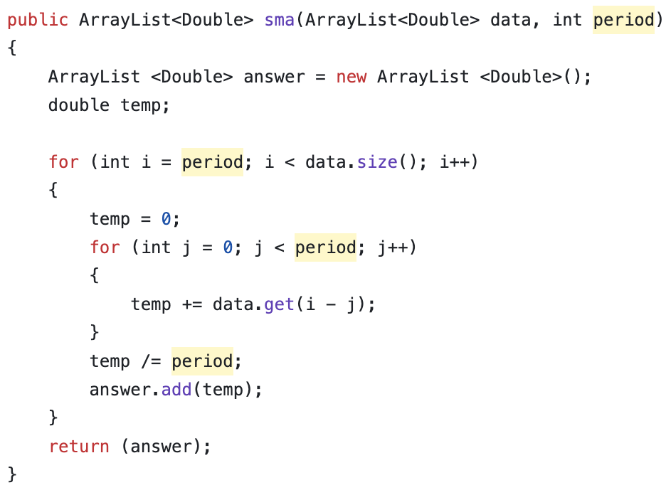
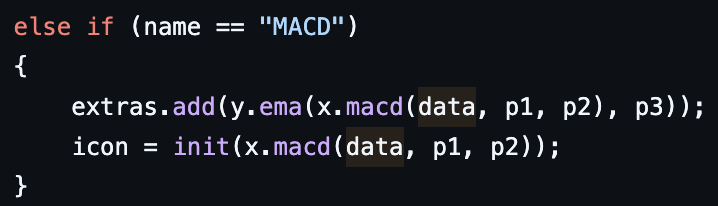
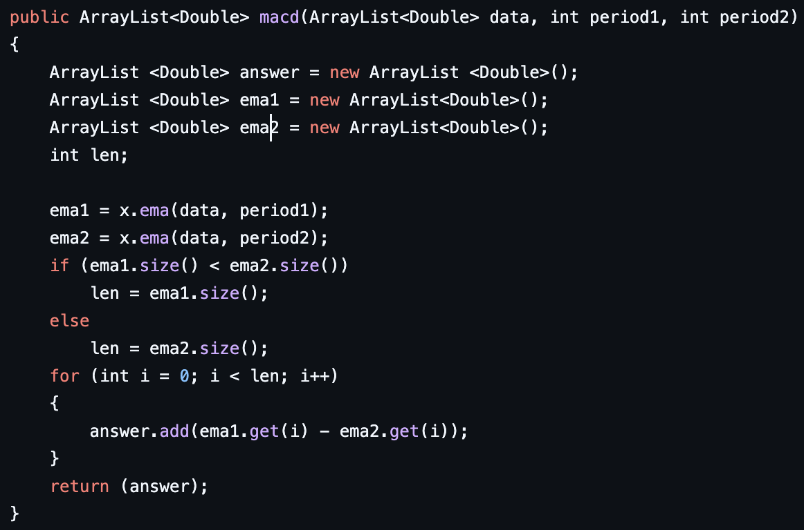

Market Terminology
Market Cap - The total amount the shares are worth multiplied by shares available
Volume - How many shares are being bought or sold
Float - Amount of shares available to trade publicly on an exchange
Bid - Used to represent a buying price for a stock
Ask - Used to represent a selling price for a stock
Level 2 - Data that shows bids + ask data for orders on a stock
IPO - Short for initial public offering when a company decides to issue shares
Liquidity - Ability to easily sell a stock into cash
Reverse stock split - Used to issues more shares of a stock with a reduction of one share price
Important Terms to Know Before Placing A Trade
Limit Order - Makes it so that you can select a set price you do not want to buy over or sell under when going to purchase a stock
Market Order - Sells or buys the stock at the current market rate. The order executes quickly however the exact price can not be guaranteed
Stop Loss - This can be stopped on a trade that either covers a short or sells at a certain point after a stock has been bought or sold.
Margin - A mechanism that allows you to effectively borrow funds from the brokerage with your deposited funds as collateral
Short Sell - Borrowing shares of a stock rather than selling them in the hopes the price drops to be able to purchase the stocks at a lower price than they were sold for, for a profit
Indicators
These are used as measurements on stock data to give a signal for a specific price movement.
We shall cover the following indicators
SMA
EMA
MACD
STOCH
SMA - Simple Moving Averages
SMA Formula
SMA = (A1 + A2 ... + AN) / N
A = period of measurement
N = Number of periods measured
The simple moving average adds up all the values in a given period. Say the period is 5 on 5 min of open data. You would take each measurement, say 10, 15, 16, 18,12, add them all together to get 71, then divide 71 by the period of 5 to get a simple moving average of 14.2.
The code here works as follows. The sma method I created takes in an array list along with a integer for the period. It then starts the loop setting i equal to the period. data.size() returns the length of the data array passed in the parameter. Then temp is used to add up all the values between the start as well as end of the period for a particular measurement. After, the temp is then divided by the period to get the same value, which is then stored in the answer array. After the entire data array has been looped through, the answer array is returned with all the SMA data.
SMA Example in Java
EMA - Expodentail Moving Averages
EMA - Formula
EMA = (C - PE) * W + PE
W = 2 / (N + 1)
N = number of periods
W = The weight of the multiplier
C = Closing price of the stock
PE = previous day EMA measurement
The coding function allows for a data array of stock data along with an integer for a defined period of measurement. It first initializes the mulit variable which gets the weight value for the function. It then calculates the first SMA average, then stores it in the start variable. Then, it loops over the rest of the data, storing each value in the answer array. It then returns the EMA measurements in a data array.
EMA Example in Java

MACD - Moving Average Convergence Divergence
MACD - Formula
1.) Takes 3 separate periods as parameters. (period 1, period 2, period 3)
2.) Take an EMA for the 1st period than takes an EMA for the 2nd period
3.) Subtract the 1st period from the 2nd period
4.) This creates the MACD line
5.) Next, you have to generate the signal line by taking an EMA of the MACD line with the 3rd period
6.) You now have the MACD line that is overlayed with the signal line
The way this code works is, first you pass in a data array with the 1st then 2nd period as parameters to the MACD function. It then creates two EMA arrays, one from the 1st period and one from the 2nd period using the EMA function described above. It then loops through each array while subtracting the 1st period indexed value from the 2nd period indexed value, then stores the value in an array that it returns. Then to call the MACD, it first creates the signal line by using the returned data array from the EMA function. This returned array from the MACD function is used as a parameter in the ema function with the 3rd period as a parameter. This creates the signal line. After, it then generates the MACD line using the explained function above.
MACD Example in Java
 STOCH - Stochastic Oscillator
STOCH - formula
%K = ((C - L15) / (H15 - L15)) * 100
C = Closing price of the stock
L15 = Lowest price of stock within 15 periods of measurement
H15 = Highest price of stock within 15 periods of measurement
%K = the stochastic oscillator price
The way this code works is it first uses a data array as well as a period that is passed as parameters to the function. It then initializes 2 doubles called ll (lowest low) & hh (highest high). It then uses a nested for loop to iterate over the data. i is set equal to the period, then the next loop is then used to pull the highest number from the period as well as the lowest number from the period. Then, those two data points are used to calculate the stochastics oscillator value. These points are then stored in a data array called answer. The loop then starts over. After it has run through all the data, it returns the answer array containing the stochastic oscillator values.